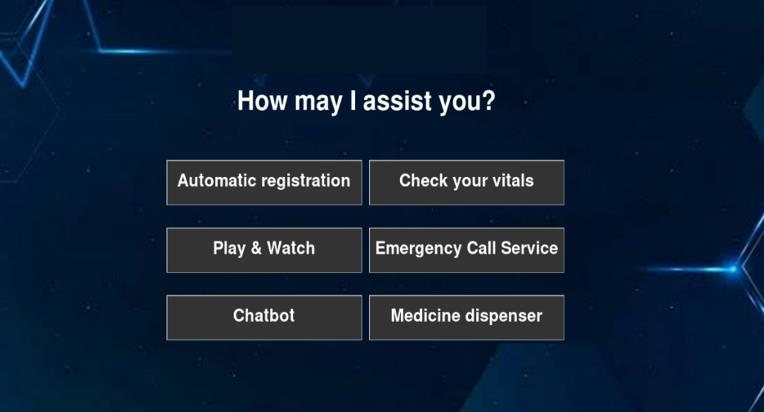
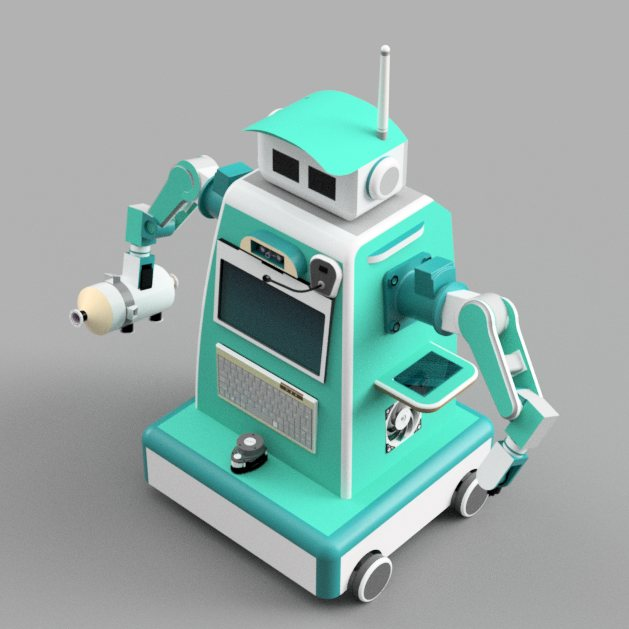
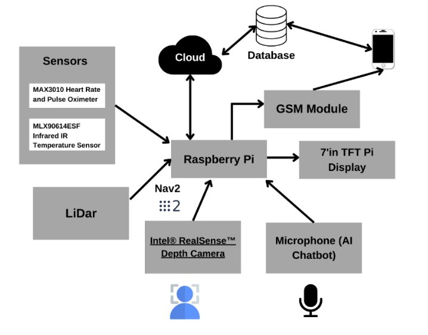
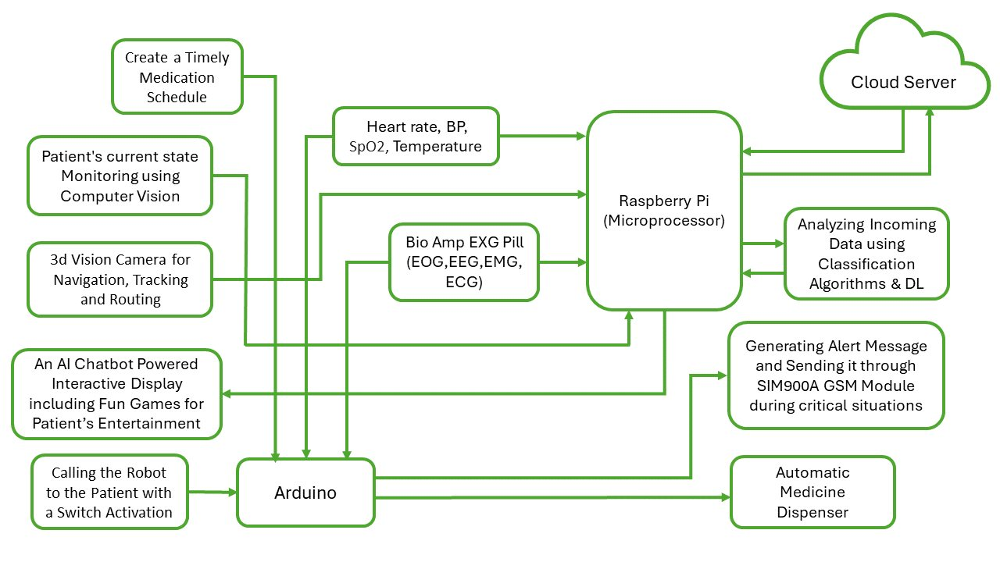
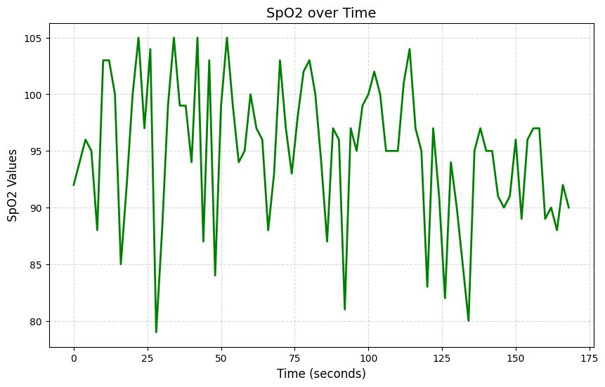
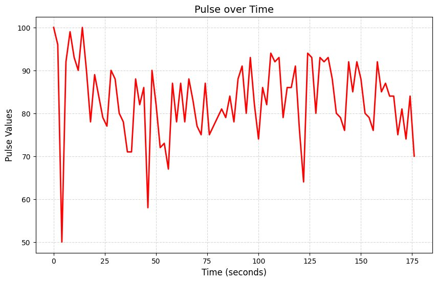
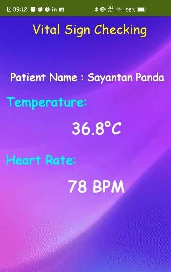
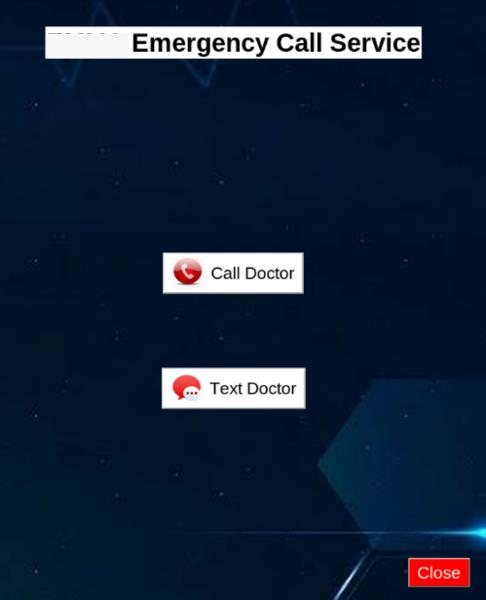
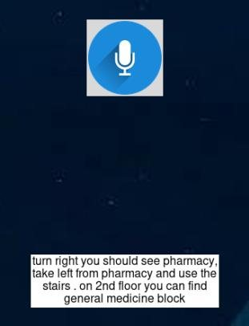
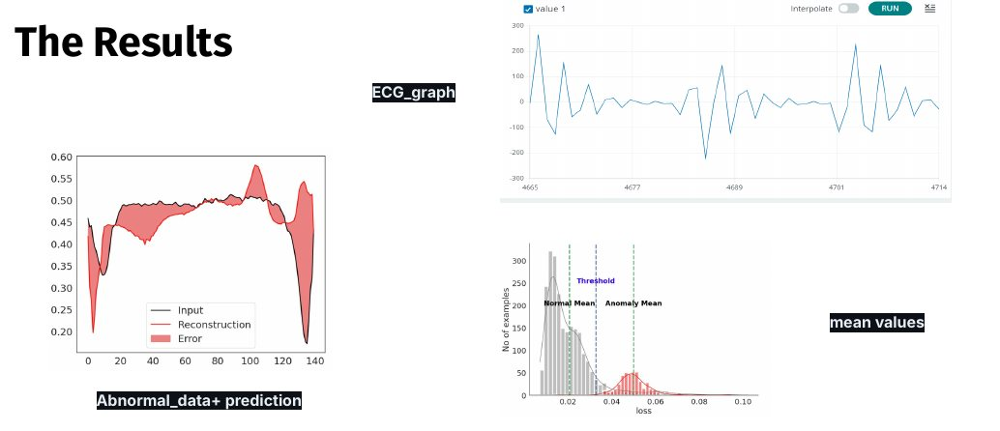

OverviewA robot for the hospital lobby
Hospital lobbies are crowded, and nurses lose a large part of their shift to paperwork and routine checks. EMMA takes over that first contact. A patient walks up, registers by voice or touch, has heart rate, SpO₂ and temperature measured without skin contact, and leaves with a PDF report, complete with photo, that a doctor can read before the consultation.
EMMA also guides families around the hospital, keeps patients company through a voice chatbot, and raises an alarm by call or SMS when a reading is abnormal. The phase 1 prototype runs on a Raspberry Pi with a 3D-printed head and arms, and its autonomous navigation is developed in ROS 2 with a simulated hospital.
PROBLEMPressure on hospital staff
- Registration and documentation take a large part of nurses’ time.
- Close contact during routine checks raises the risk of infection.
- Manual data entry introduces errors into patient records.
- Waiting patients get little information or guidance.
APPROACHWhat EMMA brings
- Self-registration with automatic PDF report generation.
- Contact-free vital-sign checks with instant analysis.
- A chatbot for questions and directions, plus entertainment.
- Emergency call and SMS alerts to doctors through GSM.
What EMMA doesSix services, one screen
Automatic registration
Name, age, date of birth and gender by voice or keyboard; the Pi camera adds a photo and the profile is saved as a report.
Check your vitals
MAX30100 pulse oximeter and MLX90614 infrared thermometer measure heart rate, SpO₂ and temperature, plotted live.
Chatbot
Speech recognition and Google Text-to-Speech answer common questions and give directions inside the hospital.
Emergency call service
One tap sends AT commands to a SIM800L module to call or text the doctor on duty.
Play & watch
Media for health education and to keep waiting patients company.
Medicine dispenser
Planned: dispensing prescribed medicine at scheduled times.

HardwareAnatomy of the robot

| Part | Component | Role |
|---|---|---|
| Brain | Raspberry Pi | Runs the UI, chatbot, registration and sensor processing |
| Eyes | 2 × 2.4-inch TFT displays | Animated eyes for a friendlier face |
| Interface | 7-inch TFT Pi display, keyboard, USB microphone, Bluetooth speaker | Touch, voice and typed input |
| Vitals | MAX30100, MLX90614 | Heart rate, SpO₂ and non-contact body temperature |
| Camera | Raspberry Pi camera | Patient photo for registration |
| Alerts | SIM800L GSM/GPRS | Calls and SMS to doctors |
| Arms | 2 × 4-DOF, 3D printed, MG996R and MG90S servos | Gestures; sanitising spray and gripping in the full design |
| Base | Plywood chassis, four motors, motor driver, 12 V 2 A battery | Mobility |
| Navigation (next phase) | LiDAR, Intel RealSense depth camera | Mapping and obstacle avoidance |


Patient flowHow a visit works
Greet
EMMA greets the patient on the touch screen with animated eyes.
Register
The patient enters details by voice or keyboard; the Pi camera takes a photo and a profile is created.
Measure
Heart rate, SpO₂ and temperature are read from the sensor plate and plotted in real time.
Analyse
Readings are compared with normal ranges; an anomaly model flags abnormal patterns.
Report and sync
A PDF report with photo and vitals is generated, and data goes to Firebase so doctors can review it in their app while the patient waits.
Escalate
If something is abnormal, or the patient presses the emergency button, the GSM module calls or texts the doctor.





AI health analysisReading the signals
Beyond fixed thresholds, EMMA’s analysis uses an autoencoder that reconstructs ECG-like signals and flags those with a high reconstruction error. The anomaly model reached 94.4% accuracy, 99.2% precision and 90.7% recall. A separate LSTM model for activity detection reached 86.9% test accuracy.

Next stepsWhat comes next
- Full autonomy on the real robot with LiDAR and an Intel RealSense depth camera.
- The right arm sanitises rooms with a spray-nozzle gripper; the left arm handles objects and greets patients.
- Medicine delivery and a scheduled medicine dispenser.
- A chatbot upgraded with large language models for open questions and more personal conversations.
- Basic, Advanced and Pro configurations for homes, medical camps, nursing homes and general wards.
Intellectual propertyProtected as an invention
A System and Method For Multitasking Medical Assistance
- Application no.
- 202441066981
- Filing date
- 04/09/2024
- Publication no.
- 52/2024
- Publication date
- 27/12/2024
Automation in Healthcare: A Robotic Approach for Patient Registration, Vital Sign Tracking, and Chatbot Interaction
Sayantan Panda, Sankhadeep Dutta, Gowtham Ammanamanchi, Samiappan Dhanalakshmi
Computing Communication and Intelligence · Taylor & Francis (CRC Press) · doi:10.1201/9781003768654-38